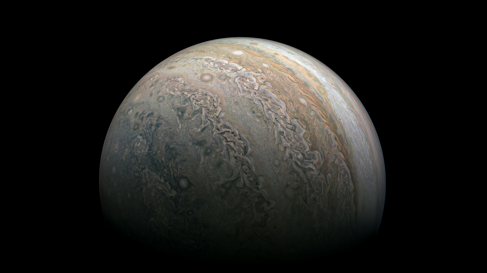

<h1 style="text-align: center; padding-top: 2rem;" id="top" class="l-heading">Jupiter Gallery</h1>

    <div class="GalleryWrapJupiter gridprops">
        <div style="grid-area: img1;">
            
        </div>
        <div style="grid-area: img2;">
            
        </div>
        <div style="grid-area: img3;">
            
        </div>
        <div style="grid-area: img4;">
            
        </div>
        <div style="grid-area: img5;">
            
        </div>
        <div style="grid-area: img6;">
            
        </div>
        <div style="grid-area: img7;">
            <video style="width: 100%; height: 100%;" muted controls
                src="https://github.com/98mohitkumar/solar-system/raw/master/Resources/Jupiter%20Perijove%2016.mp4"></video>
        </div>
        <div style="grid-area: img8;">
            
        </div>
        <div style="grid-area: img9;">
            
        </div>
        <div style="grid-area: img10;">
            
        </div>
        <div style="grid-area: img11;">
            
        </div>
        <div style="grid-area: img12;">
            
        </div>
        <div style="grid-area: img13;">
            
        </div>
        <div style="grid-area: img14;">
            <video style="width: 100%; height: 100%;" muted controls
                src="https://github.com/98mohitkumar/solar-system/raw/master/Resources/Jupiter%20Io.mp4"></video>
        </div>
    </div>